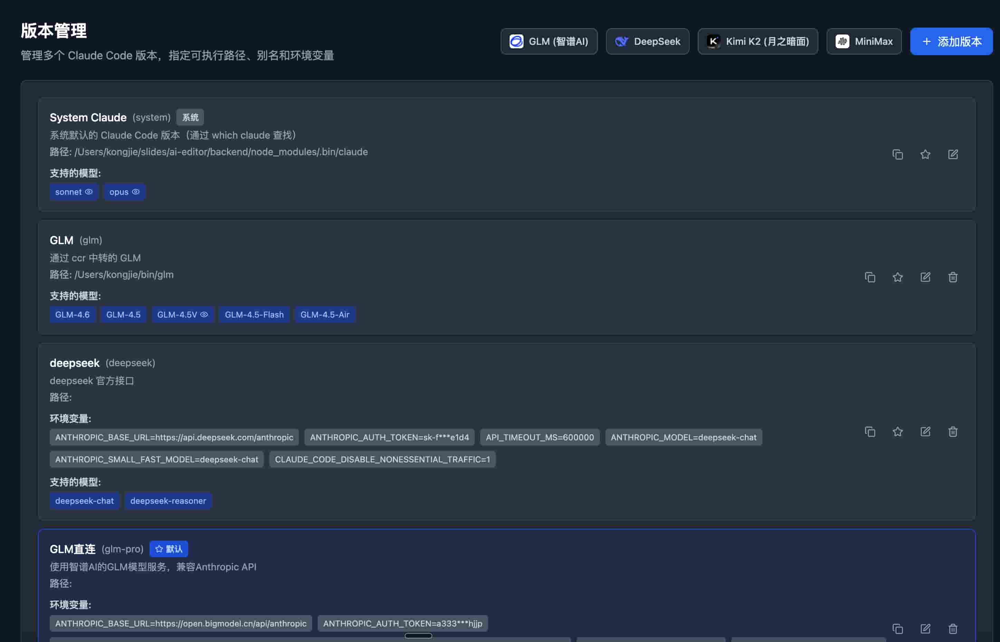

Claude Code后端模型服务切换三式
王福强
今天TVP群里有同学分享了自己使用claude code在各大模型服务之间辗转腾挪的实践方法，
恰好这几天看到点儿相关的信息和实践，
简单整理下分享给大家。
前情铺垫
大家都知道claude code是anthropic公司开发的命令行AI开发工具
它默认后端大模型接的是anthropic自己家的模型，
从最早就比较惊艳的 Claude sonnet3.5 到 现在的 Claude sonnet 4.5
后来各大模型厂商以及MaaS服务厂商为了兼容Claude系模型
对外提供的大模型服务API就跟Claude系模型的API兼容了
而兼容带来的好处就是
claude code这个工具可以无缝切换到这些模型
尤其是anthropic这家公司对大中华区一贯严格封堵的情况下
要想原汁原味
门槛还是挺高的
好在有了这些兼容的大模型API
大中华区起码可以享受到claude code的优质服务
配合后端其它大模型服务
也能媲美“特斯拉”了
使用脚本切换 claude code 后端模型服务
TVP群里有同学分享了他的最佳实践：
总结下来就是，
针对不同模型服务，
独立针对其创建claude code启动脚本：
截图内容版权归 TVP Leoobai 所有
使用脚本函数切换 claude code 后端模型服务
这个算是上一个方法的另一种实现思路，都归属于本地无中间服务器方案。
在.bashrc或者.bash_profile(甚至.profile)里针对不同的大模型服务商，定义不同的claude code启动函数，类似于(作者举例哈，没测试过，领悟思想就可以了🤣)：
function glm() {
export ANTHROPIC_AUTH_TOKEN=... # GLM的API key
export ANTHROIC_BASE_URL=... # GLM的服务地址
...
claude --dangerously-skip-permissions
}
function kimi(){
ANTHROPIC_AUTH_TOKEN="xxx" ANTHROIC_BASE_URL="xxx" claude --dangerously-skip-permissions
}
function deepseek(){
...
}这样，你每次只要在命令行敲 glm 或者 kimi 或者 deepseek 或者 …
就能启动使用不同大模型服务的claude code了。
使用独立的集中切换大模型服务中继与路由
比如你可以本地启动一个localhost上的claude code兼容的大模型服务，
然后claude code只连这个localhost上的大模型服务地址就可以了，
然后这个本地跑的大模型服务允许配置多个远程的claude code兼容的大模型服务，
想用哪个作为当前要用的大模型服务，就配置哪个是current就可以，甚至根据路由算法进行分发。
这种代理服务，你可以配合大模型自己vibe一个出来，
比如TVP群有同学也分享了他的类似工具：

你也可以用github上开源的项目，
既然这种需求那么强烈，
肯定已经有人搞了
比如： https://github.com/BenedictKing/claude-proxy
最后
happy vibe coding 🤪
我虽然知道这些路子，但其实我还是古早手工写代码多些，哈哈哈


开天窗，拉认知，订阅「福报」，即刻拥有自己的全模态人工智能。